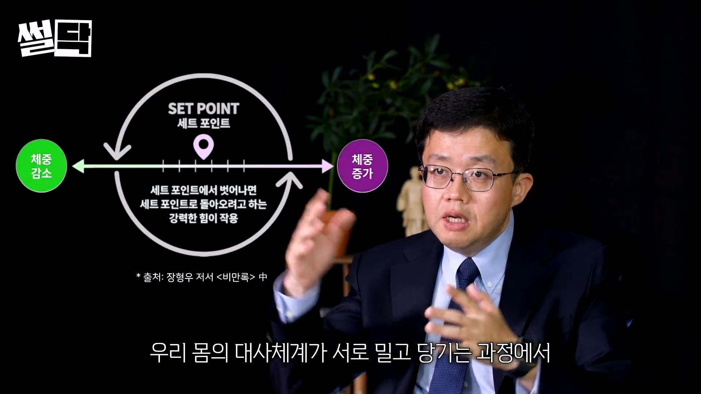
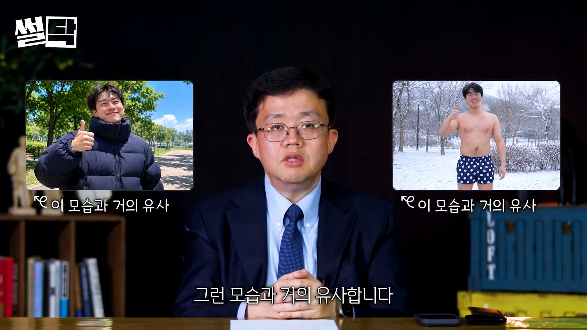
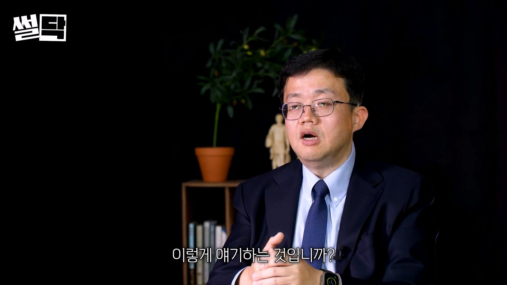
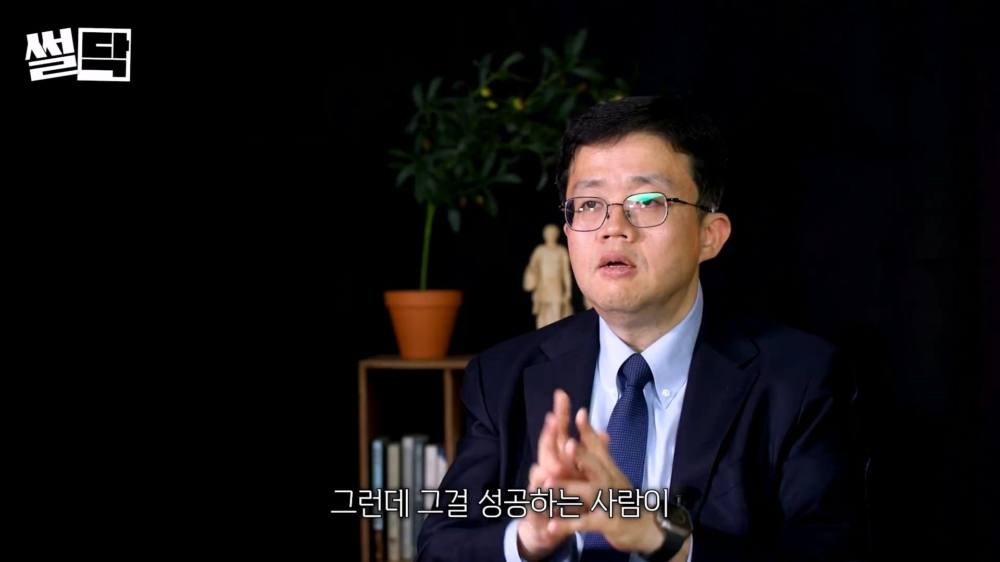

많은 다이어트 해봤다
원점으로 돌아오거나
그거보다 더 나빠져서 살 쪘다
다이어트의 고통이 너무 컸고
평생 다이어트는 불가능하다는
결론을 얻었음
115kg에서 비만 탈출 몸무게까지
가려면 80kg 정도까지 뺴야된다
저 정도를 빼려면 엄청난 인내심이
필요하고 성공 가능성도 낮고
유지하는 것은 더욱 어렵다
나 같은 경우
시상하부가 116kg에 해당하는
지방이 있어야 정상이라고 생각하고
그 지방을 유지하려고 여러가지 작동을
시키는데 그게 세트포인트다

밀고 당기는 과정에서
하나의 균형점을 유지하려고 하는
균형점이라고 할 수 있는데
사람마다 다르다는 게 문제고
인간의 힘으로 바꿀 수가 없다
위고비, 마운자로를 맞은 건
세트 포인트를 변화시킨 것이 아니고
시상하부를 기만하고 있는 중
시상하부가 지방이 많이 줄었다는 것을
모르게 기만하고 있는 중이다
시상하부가 이걸 아는 순간
다시 살을 찌우게 된다
비만치료제는 끊을 수가 없는데
끊은 사람들 대부분은 다시 체중 증가
된다고 알려져 있다
요요 안오는 법 이런 얘기는 토론할 가치가 없다
세트 포인트를 의도대로
올리고 내릴 수 있으면 반가운 소식일텐데
지금까지 그런 소식은 없다
세트포인트는 상향만 가능하지
하향은 안된다
10년이상 40kg 감량한 연예인들도
방심하고 절제하던 거를 중단하니까
다시 원상복구가 되던데
예를 들면 암, 극심한 심부전이
오지 않는 이상 체중이 빠지지 않는다
음식 조절하지 않았는데 체중이 빠지면
굉장히 안 좋은 사인이다
암 때문에 체중 세트포인트가
바뀌고 있다는 증거다
세트 포인트는 상향만 가능하지
하향은 불가능
엄청 더운 여름 날에 어떤 사람이
두꺼운 패딩 입고 괜찮아 나 견딜만 해
이렇게 말하면서 땀을 뻘뻘 흘리고 있는
상태를 생각해봐라
반대로 엄청 추운 겨울날에
속옷만 입고 나 견딜만 해, 괜찮아
말하는 것과 거의 같은 거다

비만환자가 운동과 식이요법으로
체중을 낮추고 유지하는 모습은
저런 모습과 유사한데
비만인들에게 체중 감량 과정은
해병대 지옥주와 같은데
평생 하라하면 어떻게 하겠냐?
그건 인간이 할 수 있는 일이 아니다

운동과 식이요법으로 탈출이 안된다
다만 강하게 식이요법, 운동을 하면
살이 빠지는 변화가 일부 있기 때문에
마치 노력을 통해서 줄여나갈 수 있고
비만 체중으로부터 탈출할 수 있는 것과 같은
그런 착각이 만연해 있는거다

요약
1. 체중 세트포인트가 원래대로 돌아가려고 한다
2. 위고비, 마운자로는 돌아가려는 것을 속인다
3. 비만인들에게 다이어트란 해병대 지옥주와 같다
4. 시간이 지나서 다이어트 성공한 사람이
유지하는 케이스는 1,000명 중에서 1~2명이다
5. 비만인들에게 강요하지마라
글치 계속맞아야지